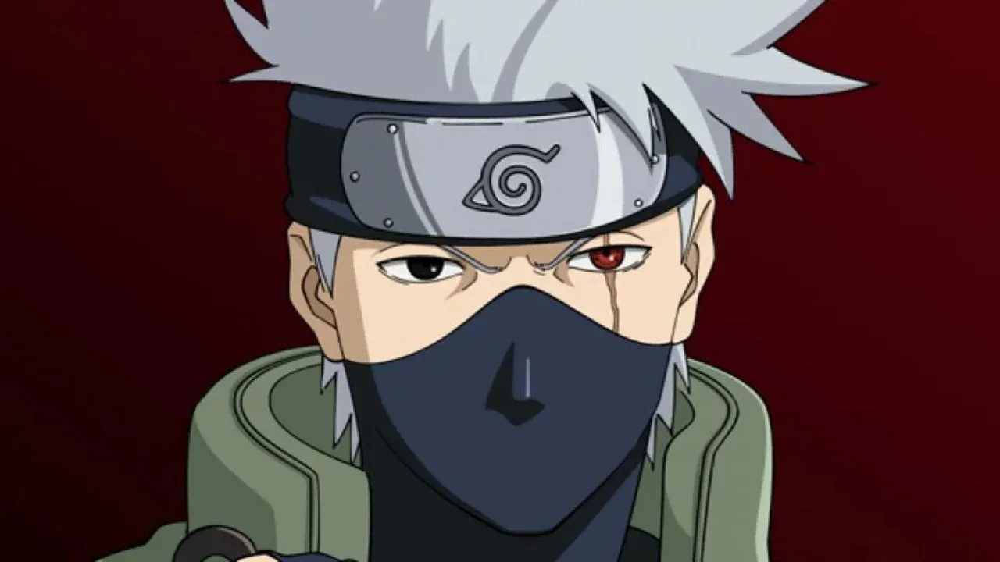
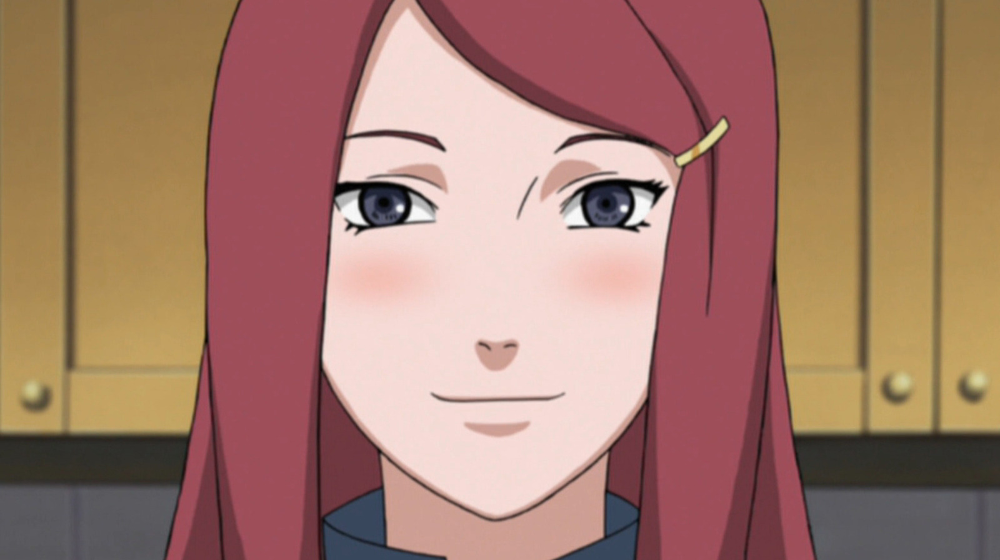

Bienvenidos a la galería de nuestro sitio web, acá insertaremos las fotografías algunos personajes de Naruto.


Kakashi Hatake


Kushina Uzumaki


Esto sería un adelanto de la sección "galería", se irá agregando más contenido a lo largo del curso y sobre todo a las secciones restantes.